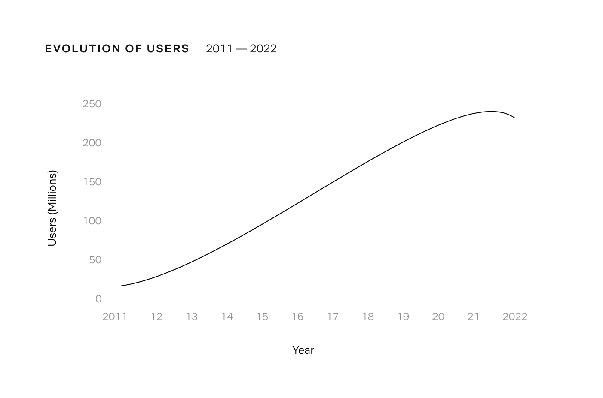
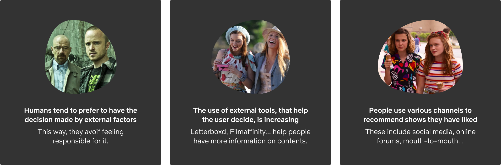
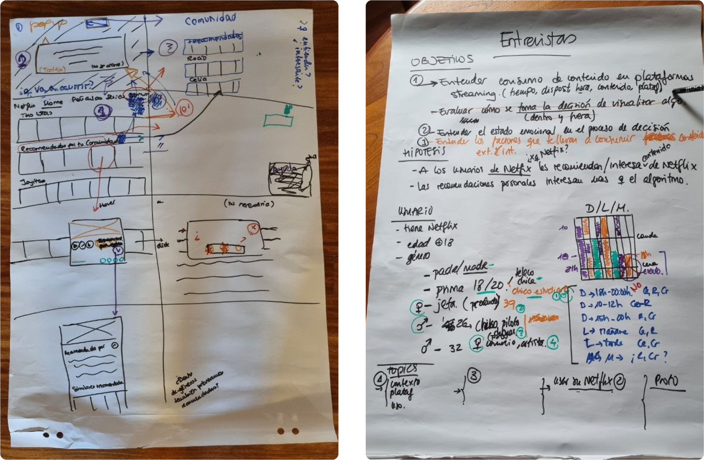
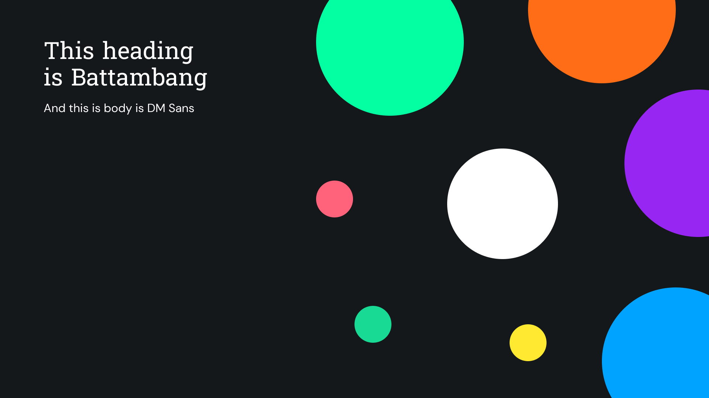

Netflix
CommunitySocial feature to diminish the time to choose a content to watch on Netflix.
- Exploration
- Reseach Design
- PoC
- High-Fi
- Conclusion
The Challenge
For years, Netflix has been the streaming content platform with the greatest quantity and variety worldwide, and the one that produces the most series and movies. This means that its catalog has grown over the years, as has the user's difficulty in choosing what to watch, reaching an average of 14 minutes. In turn, this has led to an increase in the platform's abandonment rate.
Instituto Tramontana tasked us with addressing this issue through a research-focused approach rather than immediate execution. The proposed solution involved conducting user interviews —with their careful preparation (objectives, hypotheses, target users, interview guide...)—, and the subsequente analysis of the information through categorization and learning and insight extraction to inform design decisions.
The Researh process consisted on two phases:
- Exploratory Phase (in-depth interviews): Get to know our challenge's context, a better understanding of the user's conduct and discover their needs, motivations and experiences.
- Evaluative Phase (proof of concept): Evaluate the perceived relevance, interest and utility of an idea of product, feature or service.
State of the Art
Secondary Research
Netflix has experienced a decrease in the number of users for the first time in their history, a share that has been absorbed by the competence.
According to many psychological analyses, the reasons behind users not wanting to make decisions are fear to making mistakes, opportunity costs, lack of self-confidence. People tend to prefer to have the decision made by external factors in order to avoid being responsible for it.
Proposed solution
Creation of a social feature that allows users to see the preferred shows of their friends, therefore facilitating their decision-making.
Primary Research Design
The primary research phase, in which a test of concept was evalutaed with a group of target users, was carefully prepared in the following steps:
- Define goals, hypotheses and interviewed profiles
- Prepare Interviewing Guide & Prototype
- Dump and organize the information
- Analyze similarities, feelings, trends
- Extract learnings and insights
- Define and apply changes
Sketches and brainstorming
You can check the interview guide at bit.ly/netflix-research
Proof of Concept
Thanks to the conclusions from the user interviews, two main concepts are prioritized and upgraded into mid-fi prototypes. A third round of interviews is performed to identify gaps, needs...
High-Fidelity
The naming chosen is "KOACH", brief, catchy, different and, most important, allowing for future horizontal diversification if the app is aimed at being adapted to different sports. The display font is chosen to remind of vintage and classic basketball gear. Colors are vibrant to transmit the energy of sports, playing with gradients and dark mode, preferred by most coaches interviewed. Plus, the pailette is wide to allow for proper data visualizations. The fundations and components have been systematized.
Below, you will find aswell a series of screens with main flows and interactions, that were used both for a consulting session with an expert in basketball analytics and for my final presentation.
Branding
Designing
"The Between"
Máximo Gavete, Spanish designer and author of the newsletter Honos, once expressed that design has been so obsessed with functionalism for so long that we have forgotten to focus on relationships. As the author himself says, "we need a design that relates to us from the affective, not from functionality". A design that goes beyond the solution to a problem, that does not focus on the what or the who, but on the between.
After several weeks of research, interviews and iterations, the Netflix Community was born. A space to share content recommendations with your acquaintances. A social component, an indirect conversation and a link in the distance. In other words, "a between".